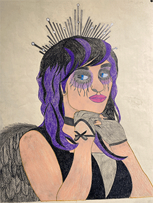
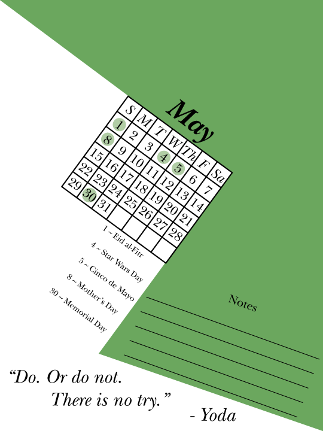
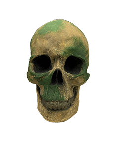
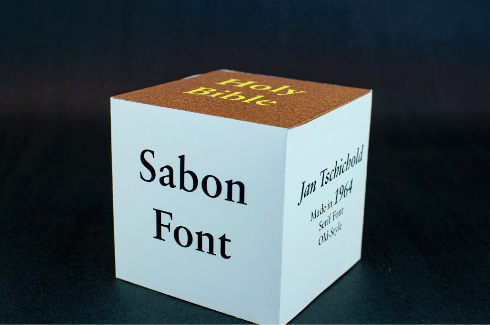

A Norse Rune font that I designed named Dreki, project for a class. Created in Adobe Illustrator. A series of six ads created to advertise Dreki, project for a class. Created in Adobe Illustrator.

A self portrait of myself within a Fallen Angel costume, project for a class. This was done by hand, color and all.

2022 Calendar, including the cover and all twelve months, project for a class. Created in Adobe Illustrator. A logo redesign for the now closed restaurant, Golden Moon Restaurant, project for a class. Created in Adobe Illustrator. A menu redesign for the now closed restaurant, Golden Moon Restaurant, project for a class. Created in Adobe Illustrator. Posters designed for the Ohana Festival that takes place in California, project for a class. Created in Adobe Illustrator.

A plaster skull that is painted to look recently found from a overgrown area in nature with flowers and moss covering it, project for a class. Hand-crafted with oil paint, fake flowers, and fake moss. A character designed for Girl Scouts based off a Roblox avatar template, requested by my mother. Created in Ibis Paint X. A coloring sheet designed for Girl Scouts, similar to the Roblox character design I did for them, requested by my mother. Created in Ibis Paint X.

A cube filled with research I did on the font Sabon, which was created by Jan Tschichold, project for a class. Created in Adobe Illustrator and picture editied in Adobe Photoshop. A hand-drawn piece of a hanging bag with spooky additions to make it seem that the bag contains a creepy creature, just extra practice in a class. Made with pencil and charcoal. A group of fragrance ads that I designed for Thymes, project for a class. Created in Adobe Illustrator and Adobe Photoshop. An infographic that gives information to help out beginners to the game, project for a class. Created in Adobe Illustrator and Adobe Photoshop. A z-fold multi panel brochure that was designed for the Endangered Wolf Center, project for a class. Created with Adobe Illustrator.